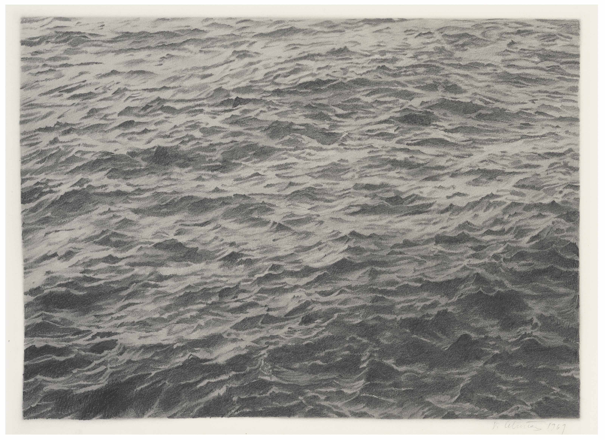

Untitled (Ocean)
Where is the water bug?
Ocean is one of a set of four lithographs Celmins made from pencil drawings of a day sky (Sky Tate P78334), a night sky (Galaxy Tate P78335) and an area of rocky desert earth (Desert Tate P78337). The lithographs were produced in an edition of seventy-five, of which Tate’s copies are the artist’s proofs. The set was printed by the Cirrus Press, Los Angeles and published by the artist.